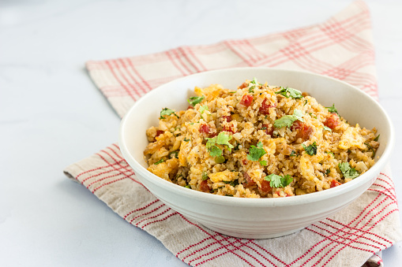
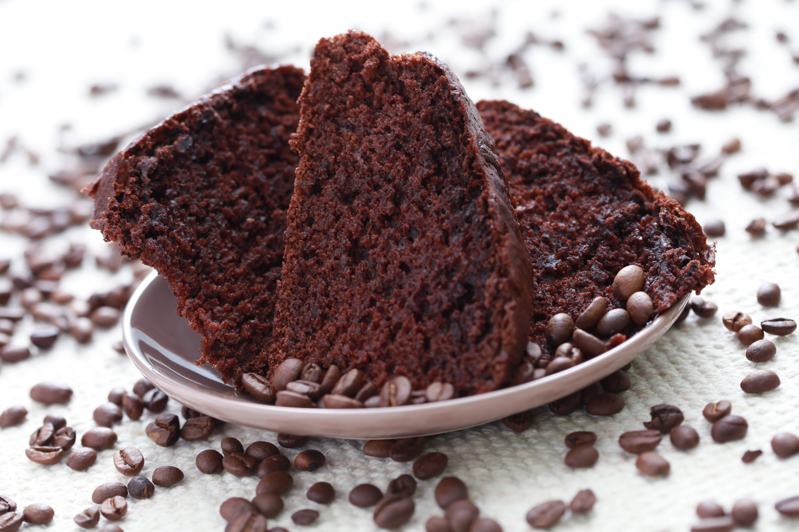

Arros de Couve-Flor

- Arroz
- Couve-Flor
- Cebola Mádia
- Azeite
Deixe a Couve-Flor picada. adicione os ingredientes e refogue bem.
Adicone sal, tampe a panela e deixe cozinhar.
Bolo de Café

- Farrinha de Trigo
- Açúcar
- Café Coado
- Chocolate em Pó
- Ovos
Bata o açucar, as gemas eo café. Adicione farinha e chocolate e mexa bem.
Bata as claras e junte à mistura.
Coxinha de Brigadeiro

- Leite Condensado
- Chocolate em Pó
- Manteiga
- Morango
- Chocolate Granulado
Junte o leite condensado, chocolate em pó e manteiga. Aqueça no fogo baixo.
Envolva os morangos e passe no granulado.